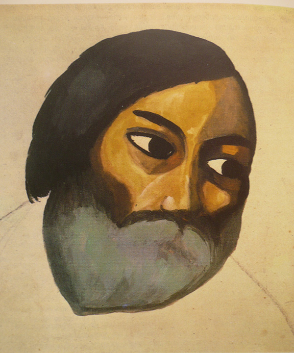
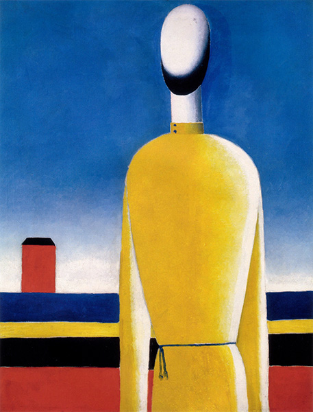

ВТОРОЙ КРЕСТЬЯНСКИЙ ПЕРИОД
Жизненные обстоятельства начала 30-х годов решительно не способствовали продолжению работы в области абстрактной живописи. Но Казимир Малевич ощущал потребность продолжать начатое дело. Видимо, сам Бог подсказал ему правильное решение проблемы: разрабатывать стиль «Сюпремус» не на абстрактных геометрических пятнах, а на материальных объектах видимого мира. Казимир избрал самые главные объекты: Земля — Небо — Человек. Они составляют основу мира земледельцев — крестьян, производителей всех необходимых для человечества благ. В начале прошлого столетия Белоруссия была самой «крестьянской», или, как её называли, самой «деревенской» страной в Европе. Поэтому естественно, что объекты живописных опытов Малевича — не «мертвая натура» и не пейзаж, а Человек-Крестьянин, родная ему Белорусская земля, которая его кормит и Небо, которое её покрывает.
Выбор темы для послереволюционной живописи был обусловлен кровной связью Казимира с Белорусской землёй. Он не мог относиться равнодушно к бедствиям и страданиям народа, он сочувствовал крестьянам и переживал их несчастья как свои — потому и видим в его живописи обличение несправедливости судьбы к белорусскому народу.
Работы Второго крестьянского периода можно отнести к жанру «Портрет на фоне пейзажа». Они не отличаются разнообразием (рис. 21, 22, 23).

21.
22. Композиция, 1932
23. Красный дом, 1932
Это земля; она занимает половину поля картины или больше — иногда чуть ли не всё поле. Она не лежит горизонтально, перспектива в этом пейзаже отсутствует. На ней невозможно что-либо посеять или посадить. Это, по существу, плоское полотно, висящее вертикально, расчерченное под линейку широкими или узкими полосами. Эта «земля» раскрашена абсолютно ненатурально: к черному, красному и белому цветам (фирменная гамма супрематизма) добавлены иногда тёмно-зелёный или светло-жёлтый с гладкой фактурой — так что не возникает никаких ассоциаций с почвой, покрытой растительностью (рис. 24).
24. Красная фигура
Это измученная земля, лишённая любовного внимания и заботы земледельца, общественная и беспризорная. Над ней так же плоско повешена кулиса неба — на нём никогда не бывает ни солнца, ни луны, ни облаков, ни птиц. Один раз пролетели по нему три маленьких самолёта (случайно заблудились?). С такого неба не ждите благотворных дождей, ни ласкового солнечного тепла, ни таинственного лунного света. Иногда оно покрывается сетью параллельных белых линий: в этом мире даже облака выстраиваются шеренгами по мановению невидимой всесильной Руки (рис. 25).
25. Марфа и Ванька, 1929
А Человек! Сколько трагизма в этом образе! Он одинок, худ, истощён, он растворяется во враждебном пространстве и вот-вот исчезнет. Чёрно-серая природа не мать ему, но злая мачеха. Человек утратил свою органическую природу и превратился в набор усечённых конусов и цилиндров, а голова его — в овоид (яйцо). Впрочем, всё это только кажется объёмным, а на самом деле это плоская фанера, раскрашенная кубистическим методом (растушёвками).
Как же могло это случиться?
Почему выхолощена человеческая сущность этого крестьянина, где его душа, где рот, нос, уши? Эти картины только по видимости упражнения в супрематизме, а по существу — горькая ирония над деградацией крестьянства в ХХ веке, над бедами родного края.
- Цёмны, цёмны народ гэты,
- Трудна i сказаць,
- Абарваны, неадзеты,
- Не yмее чытаць. (Янка Купала)
- Трудна i сказаць,
Порой образ человека совсем исчезает (рис. 26, 27).

26. Торс в желтой рубашке, 1928-1932
27. Торс, 1932
Вместо него Художник изображает схему, состоящую из нескольких плоскостей белого, красного и синего цветов. Этому манекену не обязательно иметь две руки — у него одна левая. Вот идеал человека в эпоху тотальной механизации. Он вполне может быть придатком к машине: подавать что-нибудь на конвейер. Видеть, слышать и говорить ему не обязательно.
Работа называется «Женская фигура» (28).
28. Женская фигура, 1932
На самом деле это черный силуэт без рук, который может разве что присниться в страшном сне. Он вышел из могилы, чтобы упрекнуть людей, которые превратили его в Ничто. Не менее страшна фигура, которая визуализирует метафору «черная крестьянка». Она готова лечь в могилу, облачённая в белое платье, с черными руками-ногами и головой. Нет ей жизни на этой пылающей раскалённой земле под полосатым черно-белым небом (рис. 29).
29. Крестьянка
«Два крестьянина (в белом и красном)» (рис. 30).
30. Две мужские фигуры
Эта работа выделяется своей концептуальностью. Здесь утверждается господство числа два. Две мужские фигуры стоят фронтально и симметрично, у каждого по две руки и две ноги (в отличие от некоторых других); венчают фигуры две головы. Два — опасное число. В нём скрыто начало разрушения Единого. В нём уравниваются в правах добро и зло, жизнь и смерть, Материя и Пустота. Главные боги Древности двулики или двуполы, а китайский символ Тайцзы выражает единство и противоположность двух Начал. Согласно выводам атомной физики, существование материи невозможно без двойственности процессов микромира, где непрерывно совершается разделение и слияние субатомных частиц, а мегапространство «дышит» — то расширяясь, то сжимаясь.
Картина Малевича «Два крестьянина», в которой демонстрируется диада, содержит глубокий философский смысл — она отображает фундаментальный закон мироздания. Помимо композиции, в этой картине просматривается социальный аспект: противопоставление красного и белого — сторонников и противников социалистических преобразований деревни.
Красноречивы также изображения голов бородатых крестьян (рис. 31, 32)
31. Голова крестьянина, 1934
32.
Чернобородая голова без лица — это уже не земной житель. Он (точнее, его душа) на пути в царство Небесное, она взлетает в небо вертикально.
Другая голова принадлежит жителю новой советской деревни. Он одет в красное и уже обрёл глаза (хоть и бессмысленные), нос (супрематический) и рот (плотно закрытый). А зачем ему говорить? Кто его будет слушать?
«Бегущий человек» (рис. 33).
33. Бегущий человек, 1932-1933
Этой картиной завершается Второй крестьянский период живописи Казимира Малевича. Человек (крестьянин) пытается спастись бегством из этого мира. Благословившись и взяв в руку крест, он бежит — но куда? Надежда только одна — авось Господь Бог куда-нибудь приведёт, Он милостив.
Человек на картине уже почти растаял не фоне неба — он уже не житель на этой грешной земле.
В этой картине видится мрачное пророчество о будущем белорусского крестьянства (как, впрочем, и русского) (Рис. 34).
- Так спiш, так живеш мiмаходам
- Мой край, як сцяпная магiла,
- З сваiм незавiдным народам,
- З патухшай i славай, i ciлай. (Янка Купала)
- Мой край, як сцяпная магiла,

34. Женщина с граблями, 1932
В 1933 — 1934 г. Малевич пытается вернуться на путь реалистической живописи. Он пишет портреты своей жены, дочери, автопортрет. Реалистическая трактовка лиц сочетается с условно-театральным изображением одежды персонажей и жестами их рук.
Эти работы не менее загадочны и символичны, чем всё творчество Мастера в целом. Думаю, что героизация в духе титанов Возрождения означает решимость идти своим путём вопреки всем препятствиям.
Автопортрет Казимира Малевича. 1933г.

Казимир Великий. Плакат Юрия Тореева. 2003г.
Л. Миронова,
15.10.2014